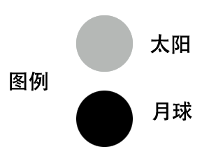
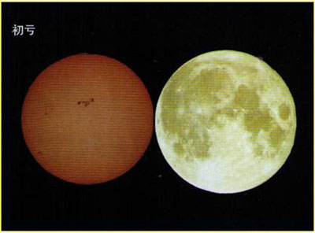
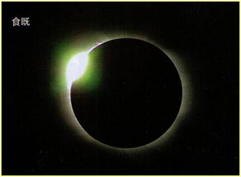
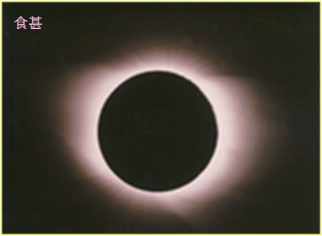
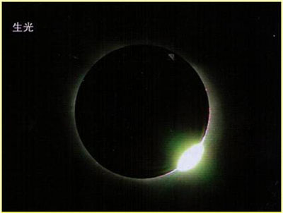
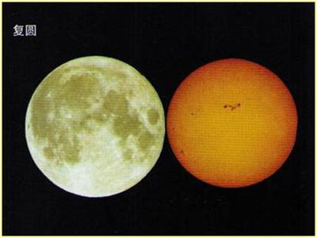

课后思考
1、日食通常发生在农历的什么时间？
答：日食一般发生在农历初一（朔日）
2、月食通常发生在农历的什么时间？
答：月食发生在农历每月十四、十五、十六、十七，且十六出现的频率最高。
3、日食和月食有什么不同？
日食和月食的不同点
| 形成不同 | 分类不同 | 阶段不同 | |
|---|---|---|---|
| 日食 | 日食是月球运动到太阳和地球中间，如果三者正好处在一条直线时，月球就会挡住太阳射向地球的光，月球身后的黑影正好落到地球上，这时发生日食现象。 | 分为日偏食、日全食、日环食、全环食。 | 日全食发生时，根据月球圆面同太阳圆面的位置关系，可分成五种食象：初亏、食既、食甚、生光、复圆。 |
| 月食 | 月食是月球运行至地球的阴影部分时，如果这三者恰好 （或几乎） 在同一条直线上，在月球和地球之间的地区会因为太阳光被地球所遮挡，月球就会“缺”了一块。 | 分为月偏食、月全食及半影月食三种。 | 月食的过程分为半影食始、初亏、食既、食甚、生光、复圆、半影食终七个阶段。 |
日食知识知多少
- 日食现象是指（）
- 下列日子中，不可能发生日食的是（）
- 发生日偏食时，下列现象可能存在的是（）
- 发生“日食”现象时，太阳、地球、月球三者的位置及月相分别是（）
- 食甚是太阳被食最深的时刻，月球中心移到同太阳中心最近。日偏食过程中，太阳被月亮遮盖最多时，两者之间的位置关系;日全食与日环食过程中，太阳被月亮全部遮盖而两个中心距离最近时，两者之间的位置关系。食甚也指发生上述位置关系的时刻。当日全食发生时，在本影扫过的地区观测到的日食景象为（）

解析
地球上某些地区的人们看到太阳表面全部或部分被月球遮掩的情况，这种现象就称为日食。故该题选D。解析
日食是月球绕地球转到太阳和地球中间时，如果太阳、月球、地球三者正好排成或接近一条直线，月球挡住了射到地球上去的太阳光，月球身后的黑影正好落到地球上，这时发生日食现象。日食的时间往往在我们农历的每月初一。分析选项可知，ABD都有有可能是农历正月初一，可能发生日食；C是农历八月十五，不可能发生日食。故该题选C。解析
日食发生时，月球遮挡太阳，月球反光面背对地球，看不到明月，故A不合题意；有太阳的时候看不到星星，故B不合题意；只有日全食才能看到日珥，故C不合题意；日偏食发生时，太阳会被月球遮挡一部分，天会变暗故，故D符合题意。故该题选D。解析
日食是由于当太阳、地球、月球在一条直线上时，射向地球的太阳光被位于地球和太阳之间的月球挡住，而在地球上形成月球的影子，由于太阳光线照射不到地球上，所以我们在地球上看不到太阳而形成日食;此时月亮以它黑暗的一面对着地球，并且与太阳同升同没，无法看到月亮，月相叫“新月”或“朔月”。故该题选C。解析
食甚是指日食或者月食过程中，太阳被月球遮盖最多或者月球被地球阴影遮盖最多的时候，故该题选C。日食的过程
分为五个阶段，而只有日全食才拥有全部过程，日偏食和日环食则没有食既和生光。
1、初亏
月球相对太阳逐日自西向东移动，日食发生时如人面向太阳，月球必从右向左（或说自西向东）遮去太阳。月球本影锥开始触及观测地之时称为初亏，观测效应是月球圆面与太阳圆面首次相切（月面左边缘与日面右边缘外切），偏食阶段始，日面右边缘先行亏缺。

2、食既
日面被遮部分越来越大，当日面最后一丝光芒消失之时，月球圆面与太阳圆面第二次相切（月面左边缘与日面左边缘内切），全食阶段开始，这一时刻称为食既。

3、食甚
月面中心和日面中心最接近之际称为食甚, 为日食阶段的中心时刻，这时天空最暗。

4、生光
月球继续向东运动，直到月球圆面与太阳圆面第三次相切（月面右边缘与日面右边缘内切），这一时刻称为生光，全食阶段结束，再次出现偏食。

5、复圆
随着月球的运动，月球圆面与太阳圆面第四次相切（月面右边缘与日面左边缘外切），这一瞬刻称为复圆，整个日食过程结束。

6、日食带
当月球绕地球转动时，月影会在地面上自西向东扫过一段比较长的地带，在月影扫过的地带都可以看见日食，所以这条带就叫做“日食带”。带内发生日全食的，就叫全食带；带内发生日环食的，就叫环食带。
7、什么是“天再昏”？
天再昏，顾名思义就是在同一天接连出现两次天黑的情况。在太阳落山前后，当第一次天逐渐变暗时，天色突然又亮了，接着又开始第二次的天黑。通常认为是在日落的前后发生了日全食所引起的天文奇观。
8、什么是“天再旦”？
“天再旦”即天亮两次的奇异天象，有学者认为是日出之际发生的一次日食。